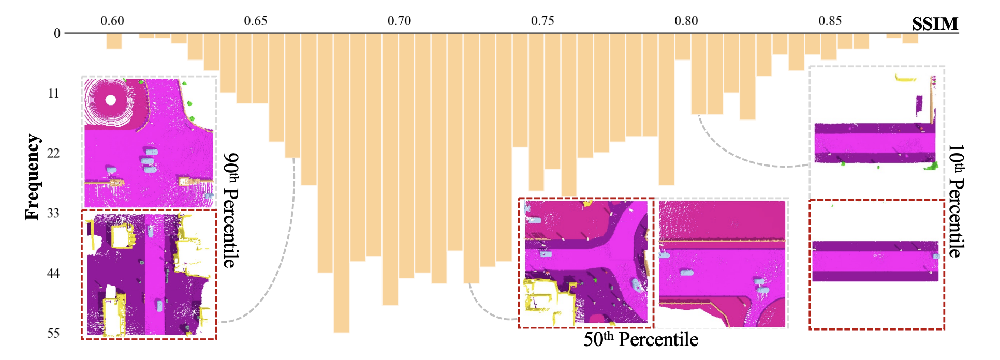

Table 1. Comparison of various diffusion models on 3D semantic scene generation of CarlaSC. DiscreteDiff, LatentDiff, and P-DiscreteDiff refer to the original discrete diffusion, latent discrete diffusion, and our approach, respectively. Conditioned models work based on the context of unlabeled point clouds or the coarse version of the ground truth scene. A higher Segmentation Metric value is better, indicating semantic consistency. A lower Feature-based Metric value is preferable, representing closer proximity to the original dataset. The brackets with V represent voxel-based network and P represent point-based network.
Figure 1. We compare with two baseline models – DiscreteDiff and
LatentDiff and show synthesis from our models with different scales. Our method produces more diverse scenes compared to the
baseline models. Furthermore, with more levels, our model can synthesize scenes with more intricate details.
We compare our approach with two baselines, the original Discrete Diffusion and the Latent Diffusion. The result reported in Table 1 demonstrates the notable performance of our method across all metrics in both unconditional and conditional settings in comparable computational resources with existing method. Our proposed method demonstrates a notable advantage in segmentation tasks, especially when it reaches around 70% mIoU for SparseUNet, which reflects its ability to generate scenes with accurate semantic coherence. We also provide visualizations of different model results in Figure 1, where the proposed method demonstrates better performance in detail generation and scene diversity for random 3D scene generations.
Figure 2. We conduct the comparison on conditioned
3D scene generation. We benchmark our method against the
discrete diffusion conditioned on unlabeled point clouds
and the same coarse scenes. Results in the figure
present the impressive results of our conditional generation
comparison. Despite the informative condition of the point cloud,
our method can still outperform it.
Additionally, we conduct the comparison on conditioned 3D scene generation. We benchmark our method against the discrete diffusion conditioned on unlabeled point clouds and the same coarse scenes. Results in Table 1 and Figure 2 present the impressive results of our conditional generation comparison. It is also observed that the point cloud-based model can achieve decent performance on F3D and MMD, which could be caused by 3D point conditions providing more structural information about the scene than the coarse scene. Despite the informative condition of the point cloud, our method can still outperform it across most metrics.

Figure 3. Contrasting Unconditional Generation / Validation Set with closest FD and SSIM scenes.

Table 2. Feature L2-distance (FD) and structural similarity (SSIM) between a scene and the closest scene in the training set. We randomly selected 20 scenes and calculated the average.
The MMD and F3D metrics numerically illustrate the statistical feature distance between generated scenes and the training set. Our method achieves the lowest MMD and F3D among all baseline methods as shown in Table 1. However, we argue that this does not indicate overfitting to the dataset for the following reasons. First, our MMD and F3D are larger than those of the ground truth. Furthermore, we leverage two similarity metrics to search and show that a generated scene is different from its nearest neighbour in the dataset. The first metric is based on feature similarity (FD) and the other on structural similarity (SSIM). Specifically, we randomly select 20 generated scenes and identify their closest matches in the training set using the FD and SSIM metrics. The average FD and SSIM of these 20 scenes are calculated and presented in Table 2. Additionally, we apply the same methodology to the Validation Set to establish an oracle baseline. Table 2 shows that our generated scenes are comparable to the oracle baseline, verifying that our method does not overfit the training set. To further support this, we qualitatively examine two randomly selected generated scenes and one scene from the Validation Set. Figure 3 visualizes these scenes along with their closest matches in the dataset. As shown in Figure 3, the generated scenes show variation from its closest match in the dataset. This visual evidence reinforces that PDD successfully captures the distribution of the training set instead of merely memorizing it.